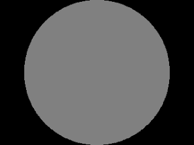

Color Keying and Blending

Last Updated 8/09/12
Color keying is taking a color from an image and making it transparent. In the last tutorial we did some pseudo color keying by blacking out the image background. In this tutorial we'll make the background transparent white and make the image itself transparent.From LTexture.h
bool loadPixelsFromFile( std::string path );
/*
Pre Condition:
-Initialized DevIL
Post Condition:
-Loads member pixels from the given file
-Pads image to have power-of-two dimensions
-Reports error to console if pixels could not be loaded
Side Effects:
-None
*/
bool loadTextureFromFileWithColorKey( std::string path, GLubyte r, GLubyte g, GLubyte b, GLubyte a = 000 );
/*
Pre Condition:
-A valid OpenGL context
-Initialized DevIL
Post Condition:
-Creates a texture from the given file
-Pads image to have power-of-two dimensions
-Sets given RGBA value to RFFGFFBFFA00 in pixel data
-If A = 0, only RGB components are compared
-Reports error to console if texture could not be created
Side Effects:
-Binds a NULL texture
*/
bool loadTextureFromPixels32();
/*
Pre Condition:
-A valid OpenGL context
-Valid member pixels
Post Condition:
-Creates a texture from the member pixels
-Deletes member pixels on success
-Reports error to console if texture could not be created
Side Effects:
-Binds a NULL texture
*/
Here's 3 new functions we're going to make to color key the image. There's loadPixelsFromFile() which instead of loading the full texture from the file, it gets the pixels from
the file instead. There's an overloaded version of loadTextureFromPixels32() which creates a texture from the member pixels. Finally there's loadTextureFromFileWithColorKey()
which uses loadPixelsFromFile() and loadTextureFromPixels32() to load a color keyed texture.
The function loadTextureFromFileWithColorKey() takes in the file path, and the R/G/B/A components of the color you want to make transparent. The default value for alpha is 0 since a lot of the time you may only want to specify RGB values. When this function gets 0 as an alpha value, it only considers the RGB values when color keying. This works since anything with an alpha value of 0 is already transparent and why would you want to make something that's already transparent transparent?
The function loadTextureFromFileWithColorKey() takes in the file path, and the R/G/B/A components of the color you want to make transparent. The default value for alpha is 0 since a lot of the time you may only want to specify RGB values. When this function gets 0 as an alpha value, it only considers the RGB values when color keying. This works since anything with an alpha value of 0 is already transparent and why would you want to make something that's already transparent transparent?
From LTexture.cpp
bool LTexture::loadPixelsFromFile( std::string path )
{
//Deallocate texture data
freeTexture();
//Texture loading success
bool pixelsLoaded = false;
//Generate and set current image ID
ILuint imgID = 0;
ilGenImages( 1, &imgID );
ilBindImage( imgID );
//Load image
ILboolean success = ilLoadImage( path.c_str() );
//Image loaded successfully
if( success == IL_TRUE )
{
//Convert image to RGBA
success = ilConvertImage( IL_RGBA, IL_UNSIGNED_BYTE );
if( success == IL_TRUE )
{
//Initialize dimensions
GLuint imgWidth = (GLuint)ilGetInteger( IL_IMAGE_WIDTH );
GLuint imgHeight = (GLuint)ilGetInteger( IL_IMAGE_HEIGHT );
//Calculate required texture dimensions
GLuint texWidth = powerOfTwo( imgWidth );
GLuint texHeight = powerOfTwo( imgHeight );
//Texture is the wrong size
if( imgWidth != texWidth || imgHeight != texHeight )
{
//Place image at upper left
iluImageParameter( ILU_PLACEMENT, ILU_UPPER_LEFT );
//Resize image
iluEnlargeCanvas( (int)texWidth, (int)texHeight, 1 );
}
At the top of our new loadPixelsFromFile() we call freeTexture() to get rid of any texture data that exists. We didn't do this in loadTextureFromFile() because the call to
loadTextureFromPixels32() freed the texture before making a texture. The rest of loadPixelsFromFile() should all look pretty familiar.
From LTexture.cpp
//Allocate memory for texture data
GLuint size = texWidth * texHeight;
mPixels = new GLuint[ size ];
//Get image dimensions
mImageWidth = imgWidth;
mImageHeight = imgHeight;
mTextureWidth = texWidth;
mTextureHeight = texHeight;
//Copy pixels
memcpy( mPixels, ilGetData(), size * 4 );
pixelsLoaded = true;
}
//Delete file from memory
ilDeleteImages( 1, &imgID );
}
//Report error
if( !pixelsLoaded )
{
printf( "Unable to load %s\n", path.c_str() );
}
return pixelsLoaded;
}
What's different in loadPixelsFromFile() is that we don't need to create a texture. What we do instead is allocate memory to copy the pixel data into and then copy the data in
with memcpy().
The first argument of memcpy() is where you want to copy the data to. The second argument is where you want to copy the data from. The last argument is how big the data is in bytes. Since it's 4 bytes per pixel, the size is number of pixels times 4.
The first argument of memcpy() is where you want to copy the data to. The second argument is where you want to copy the data from. The last argument is how big the data is in bytes. Since it's 4 bytes per pixel, the size is number of pixels times 4.
From LTexture.cpp
bool LTexture::loadTextureFromPixels32()
{
//Loading flag
bool success = true;
//There is loaded pixels
if( mTextureID == 0 && mPixels != NULL )
{
//Generate texture ID
glGenTextures( 1, &mTextureID );
//Bind texture ID
glBindTexture( GL_TEXTURE_2D, mTextureID );
//Generate texture
glTexImage2D( GL_TEXTURE_2D, 0, GL_RGBA, mTextureWidth, mTextureHeight, 0, GL_RGBA, GL_UNSIGNED_BYTE, mPixels );
//Set texture parameters
glTexParameteri( GL_TEXTURE_2D, GL_TEXTURE_MAG_FILTER, GL_LINEAR );
glTexParameteri( GL_TEXTURE_2D, GL_TEXTURE_MIN_FILTER, GL_LINEAR );
//Unbind texture
glBindTexture( GL_TEXTURE_2D, NULL );
//Check for error
GLenum error = glGetError();
if( error != GL_NO_ERROR )
{
printf( "Error loading texture from %p pixels! %s\n", mPixels, gluErrorString( error ) );
success = false;
}
else
{
//Release pixels
delete[] mPixels;
mPixels = NULL;
}
}
Here's the overloaded version of loadTextureFromPixels32() with a few differences. The first is obviously that it uses member pixels to create the texture. A more subtle
difference is that there's no call to freeTexture() in this version. It doesn't make sense to get rid of pixel data before we create a texture from pixel data.
From LTexture.cpp
//Error
else
{
printf( "Cannot load texture from current pixels! " );
//Texture already exists
if( mTextureID != 0 )
{
printf( "A texture is already loaded!\n" );
}
//No pixel loaded
else if( mPixels == NULL )
{
printf( "No pixels to create texture from!\n" );
}
success = false;
}
return success;
}
It's important to note that this version of loadTextureFromPixels32() can fail if there's already a texture made or there are no member pixels.
From LTexture.cpp
bool LTexture::loadTextureFromFileWithColorKey( std::string path, GLubyte r, GLubyte g, GLubyte b, GLubyte a )
{
//Load pixels
if( !loadPixelsFromFile( path ) )
{
return false;
}
//Go through pixels
GLuint size = mTextureWidth * mTextureHeight;
for( int i = 0; i < size; ++i )
{
//Get pixel colors
GLubyte* colors = (GLubyte*)&mPixels[ i ];
//Color matches
if( colors[ 0 ] == r && colors[ 1 ] == g && colors[ 2 ] == b && ( 0 == a || colors[ 3 ] == a ) )
{
//Make transparent
colors[ 0 ] = 255;
colors[ 1 ] = 255;
colors[ 2 ] = 255;
colors[ 3 ] = 000;
}
}
//Create texture
return loadTextureFromPixels32();
}
Now to do the actual color keying. It's a simple as loading the pixels, going through the pixel data and finding any pixels that match the RGBA values (or just the RGB values if
a equal zero) and the finally creating a texture from the pixels.
From LUtil.cpp
bool initGL()
{
//Set the viewport
glViewport( 0.f, 0.f, SCREEN_WIDTH, SCREEN_HEIGHT );
//Initialize Projection Matrix
glMatrixMode( GL_PROJECTION );
glLoadIdentity();
glOrtho( 0.0, SCREEN_WIDTH, SCREEN_HEIGHT, 0.0, 1.0, -1.0 );
//Initialize Modelview Matrix
glMatrixMode( GL_MODELVIEW );
glLoadIdentity();
//Initialize clear color
glClearColor( 0.f, 0.f, 0.f, 1.f );
//Enable texturing
glEnable( GL_TEXTURE_2D );
//Set blending
glEnable( GL_BLEND );
glDisable( GL_DEPTH_TEST );
glBlendFunc( GL_SRC_ALPHA, GL_ONE_MINUS_SRC_ALPHA );
//Check for error
GLenum error = glGetError();
if( error != GL_NO_ERROR )
{
printf( "Error initializing OpenGL! %s\n", gluErrorString( error ) );
return false;
}
//Initialize DevIL and DevILU
ilInit();
iluInit();
ilClearColour( 255, 255, 255, 000 );
//Check for error
ILenum ilError = ilGetError();
if( ilError != IL_NO_ERROR )
{
printf( "Error initializing DevIL! %s\n", iluErrorString( ilError ) );
return false;
}
return true;
}
Do get our color keying and blending to work, we have to do some more initialization. The first thing we have to do is enable blending with glEnable().
Secondly, we're going disable depth testing with glDisable(). Depth testing is useful in 3D OpenGL applications where if you render something and then render something that's behind it, the object that's behind won't raster it's polygons over the object that's in front because the depth is tested first. The reason we disable depth testing is when you mix blending and depth testing you get funky results.
Lastly, we need to set our blending with glBlendFunc(). The first argument is how the source pixels (the polygons you're rendering onto the existing scene) are going to be factored, and the second argument is the destination pixels (the existing scene). For the source, the source alpha value is going to be used. For the destination, it's going to be 1 - source alpha. glBlendFunc() uses the 0 - 1 color scale instead of the 0 - 255 color scale.
So if we render something with an alpha of 1, 100% of the source color is going to be blended and 1 - 1 = 0% of the destination color is going to be blended. This makes sense since a color with an alpha of 1 is completely opaque.
Secondly, we're going disable depth testing with glDisable(). Depth testing is useful in 3D OpenGL applications where if you render something and then render something that's behind it, the object that's behind won't raster it's polygons over the object that's in front because the depth is tested first. The reason we disable depth testing is when you mix blending and depth testing you get funky results.
Lastly, we need to set our blending with glBlendFunc(). The first argument is how the source pixels (the polygons you're rendering onto the existing scene) are going to be factored, and the second argument is the destination pixels (the existing scene). For the source, the source alpha value is going to be used. For the destination, it's going to be 1 - source alpha. glBlendFunc() uses the 0 - 1 color scale instead of the 0 - 255 color scale.
So if we render something with an alpha of 1, 100% of the source color is going to be blended and 1 - 1 = 0% of the destination color is going to be blended. This makes sense since a color with an alpha of 1 is completely opaque.
From LUtil.cpp
bool loadMedia()
{
//Load and color key texture
if( !gCircleTexture.loadTextureFromFileWithColorKey( "10_color_keying_and_blending/circle.png", 000, 255, 255 ) )
{
printf( "Unable to load circle texture!\n" );
return false;
}
return true;
}
Here's our texture loaded with a cyan color key. Now the circle has a transparent background.
From LUtil.cpp
void render()
{
//Clear color buffer
glClear( GL_COLOR_BUFFER_BIT );
//Render Circle
glColor4f( 1.f, 1.f, 1.f, 0.5f );
gCircleTexture.render( ( SCREEN_WIDTH - gCircleTexture.imageWidth() ) / 2.f, ( SCREEN_HEIGHT - gCircleTexture.imageHeight() ) / 2.f );
//Update screen
glutSwapBuffers();
}
Before we render the texture we want to make it partially transparent. So we make a call to glColor4f() with the alpha part of the color set to be 50%. This will make our
quad and the texture on it have an overall alpha value of 50%.